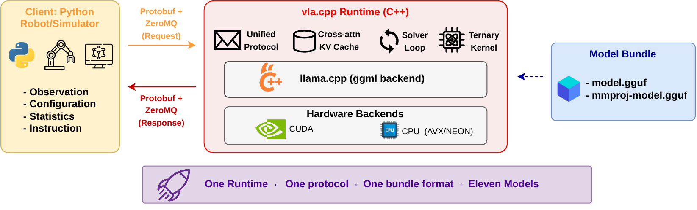
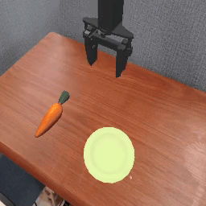
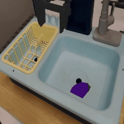
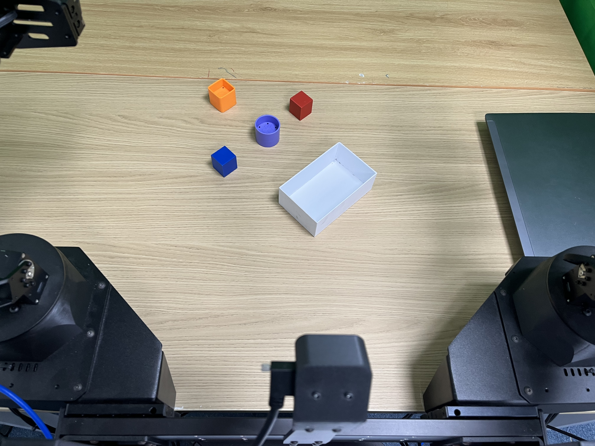
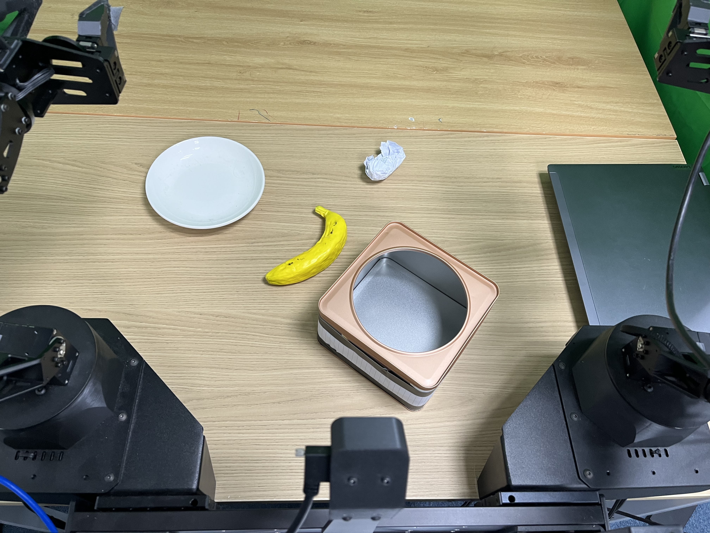
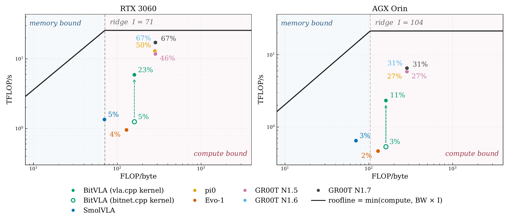

CoRL 2026 submission
vla.cpp: A Unified Inference Runtime for Vision-Language-Action Models
A portable C++ runtime built on llama.cpp for serving flow-matching and diffusion VLA policies from compact model bundles across workstation and embedded robot hardware.
Code, converters, model bundles, and benchmark scaffolds will be linked here after release.
Abstract
Vision-language-action policies are typically shipped as Python/PyTorch stacks that assume a workstation-class GPU, which mismatches the embedded hardware robots actually carry. vla.cpp is a portable C++ inference runtime that serves the VLA pattern in which a cached vision-language prefix is consumed by a cross-attending action expert over several solver steps.
One runtime serves seven architectures spanning six backbone families and five action-head implementations behind one request/response protocol. On LIBERO-Object, the engine matches reference behavior within one episode out of 200, runs BitVLA at 100% success in 1.3 GiB of memory, and carries the same bundle from an RTX 3060 down to an 8 GB embedded module. A cross-hardware roofline analysis shows that batch-1 VLA inference is compute-bound; an IMMA ladder GEMM derived from that analysis cuts BitVLA per-step latency by 4.5x.
VLA inference
llama.cpp
GGUF bundles
LIBERO-Object
ALOHA arm
edge deployment
roofline analysis
System Architecture

Highlights
Key Contributions
Unified native runtime
A llama.cpp-based C++ server loads one self-contained bundle format and serves flow-matching or diffusion VLA action heads through a shared request/response path.
Deployment-scale benchmarking
LIBERO-Object, memory-tier, latency, and roofline measurements show how the same runtime behaves from RTX 3060 workstations down to Jetson-class robot hardware.
Real-arm evidence path
The ALOHA section pairs pytorch and vla.cpp trials by task and trial number, with setup photos, aggregate success rates, latency snapshots, and upload slots for the full evidence set.
Method
vla.cpp runs as a stateless C++ server paired with a lightweight client. The server loads a self-contained GGUF bundle once, decodes observations from a Protobuf request, runs VLA inference, denormalizes actions, and returns an action chunk over ZeroMQ.
Unified control flow
Flow-matching and diffusion action heads map onto one VLA inference path instead of separate per-model serving stacks.
Reusable prefix cache
The vision-language prefix is encoded once per observation and reused by cross-attention across solver steps.
Bundle-local metadata
Model weights, architecture configuration, and action/state normalization statistics travel with the runtime artifact.
Leaderboard
The main success leaderboards are split by benchmark: LIBERO-Object simulation reports one aggregate success rate over 200 episodes per model, while the real ALOHA arm reports task-level and overall success over the available trial set for each engine. Latency, roofline, memory, and video evidence are supporting deployment measurements.
LIBERO-Object leaderboard
Real ALOHA leaderboard
ALOHA video evidence
Latency and roofline
Memory tiers
LIBERO-Object Simulator Leaderboard
| Rank | Model | Backbone | Chunk | SR (200 eps) | Step | Inference | VRAM |
|---|---|---|---|---|---|---|---|
| 1 | BitVLA | BitNet-SigLIP | 8 | 100.0% | 37.85 ms | 235.9 ms | 1312 MiB |
| 2 | GR00T-N1.7 | Cosmos | 16 | 98.0% | 10.26 ms | 84.1 ms | 6302 MiB |
| 3 | GR00T-N1.6 | Eagle | 16 | 86.5% | 10.29 ms | 83.6 ms | 6048 MiB |
| 4 | GR00T-N1.5 | Eagle | 16 | 96.0% | 14.17 ms | 147.0 ms | 4866 MiB |
| 5 | Evo-1 | InternVL3 | 8 | 94.5% | 63.60 ms | 131.0 ms | 1564 MiB |
| 6 | SmolVLA | SmolVLM2 | 4 | 90.5% | 28.16 ms | 54.8 ms | 1410 MiB |
| 7 | pi0 | PaliGemma | 32 | 87.5% | 9.74 ms | 207.2 ms | 5548 MiB |
This table has one SR column because the current paper reports the aggregate LIBERO-Object suite result: 10 tasks x 20 episodes = 200 episodes per architecture.
LIBERO Rollouts
Example simulator rollouts produced by the vla.cpp runtime. These sit with the LIBERO leaderboard because they illustrate simulator behavior rather than real ALOHA-arm execution.

LIBERO rollout

LIBERO rollout
Real ALOHA Arm Leaderboard
| Rank | Engine | Policy | Average SR | task 1 | task 2 | Task time | Inference/chunk |
|---|---|---|---|---|---|---|---|
| 1 | vla.cpp | GR00T-N1.6 BF16 | 35/40 (87.5%) | 18/20 (90%) | 17/20 (85%) | 49 s / 28 s | ~470 ms |
| 2 | pytorch baseline | GR00T-N1.6 BF16 | 16/40 (40.0%) | 3/20 (15%) | 13/20 (65%) | 71 s / 30 s | ~584-688 ms |
Pass rate is taken from the source worksheet; average time is calculated from successful executions only. pytorch and vla.cpp each have 20 trials per task.
Real ALOHA Left Arm Benchmark
GR00T N1.6 BF16 inference comparison on two physical manipulation tasks. The visualization separates success rate, successful-trial time, server latency, and uploaded trial evidence.

pick up all blocks on the table and place them into the white box.

pick up the trash and place it into the box, then pick up the banana and place it on the white dish.
16/40 successful trials across task 1 and task 2.
35/40 successful trials across task 1 and task 2.
vla.cpp-BF16, 35/40 trials
vla.cpp-BF16, 18/20 blocks-to-box trials
vla.cpp-BF16, 17/20 trash-and-banana trials
vla.cpp-BF16, successful trials only
pass rate by task
average successful time
ALOHA Experiment Videos
Each page shows one trial: one setup image plus external camera overview, camera wrist left, and camera high videos for pytorch and vla.cpp.
page 1 of 1
pytorch reference comparison
On SmolVLA BF16 over LIBERO-Object, vla.cpp reduces environment-observed step latency from 223.96 ms to 28.16 ms while keeping peak VRAM essentially unchanged.
- pytorch
- 223.96 ms, 1406 MiB
- vla.cpp
- 28.16 ms, 1410 MiB
IMMA Tensor-Core Kernel
Moving BitVLA ternary matrix multiplication from a DP4A path to IMMA tensor cores cuts per-step latency by 4.6x on RTX 3060 and 4.0x on AGX Orin while preserving numerical output.
- RTX 3060
- 172.8 ms to 37.85 ms
- AGX Orin
- 406.6 ms to 101.11 ms

Hardware Tiers
| Model | RTX 3060 | AGX Orin | Orin Nano | Nano RSS |
|---|---|---|---|---|
| SmolVLA | 28.16 ms | 65.41 ms | 141.81 ms | 2031 MiB |
| BitVLA | 37.85 ms | 101.11 ms | 355.65 ms | 2199 MiB |
| Evo-1 | 63.60 ms | 131.01 ms | 458.84 ms | 2135 MiB |
| GR00T-N1.5 | 14.17 ms | 28.78 ms | 84.76 ms* | 5975 MiB |
| pi0 | 9.74 ms | 27.90 ms | 39.10 ms* | 6068 MiB |
| GR00T-N1.6 | 10.29 ms | 26.70 ms | Does not fit | - |
| GR00T-N1.7 | 10.26 ms | 26.84 ms | Does not fit | - |
* Run split with simulator offloaded to another machine.
Memory Efficiency
The smallest robot target is an 8 GB Jetson Orin Nano, where the model must share unified memory with the OS, camera stack, simulator or robot client, and the rest of the autonomy pipeline.
Packed ternary weights reduce the on-disk model from 5.6 GiB while keeping the same numerical values at inference.
The packed layout drops load-time memory pressure enough for BitVLA to run on the Nano-class target.
Five architectures fit the 8 GB tier; the largest GR00T variants still exceed the shared-memory budget.
Comparison
The project targets runtime portability and utilization. Quantization, vendor compilers, and Python reference servers solve adjacent parts of the deployment problem.
Python reference servers
Reference stacks preserve research flexibility, but eager pytorch dispatch leaves batch-1 VLA inference launch-bound. On SmolVLA, vla.cpp reduces step latency from 223.96 ms to 28.16 ms on the same RTX 3060 setup.
Quantization-only deployment
Weight packing controls footprint, but single-request VLA inference remains compute-bound. The BitVLA speedup comes from moving the same ternary math onto IMMA tensor cores, not from changing the packed format alone.
Single-target compilers
Vendor compilers can be strong for one model on one device generation. vla.cpp instead emphasizes one bundle protocol and one serving path across several VLA architectures and hardware tiers.
Citation
Citation details are provisional until the final paper metadata and public artifact URLs are released.
@misc{vlacpp2026,
title = {vla.cpp: A Unified Inference Runtime for Vision-Language-Action Models},
author = {Anonymous},
year = {2026},
note = {CoRL 2026 submission}
}